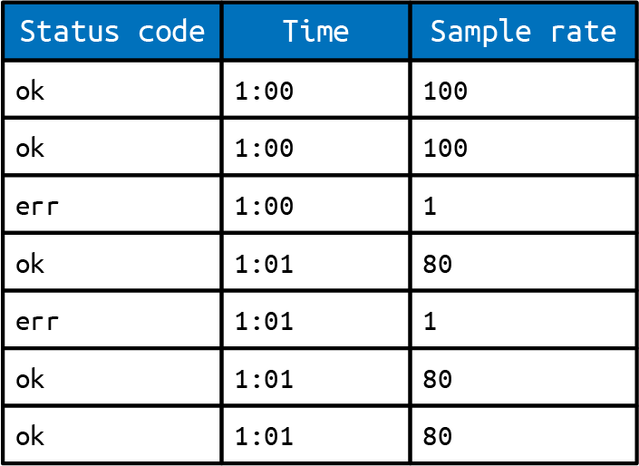
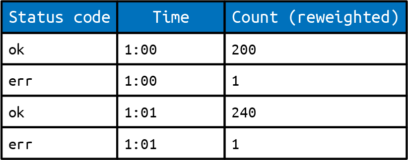
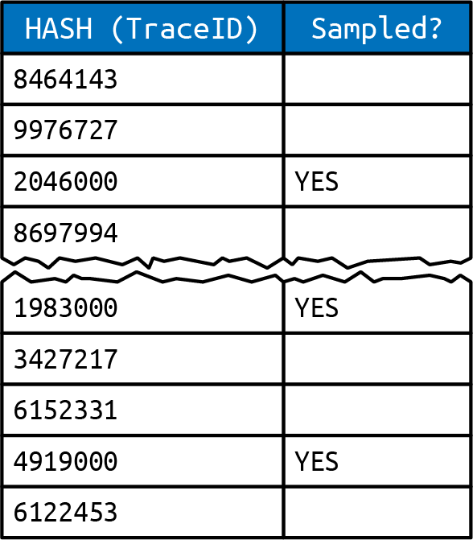
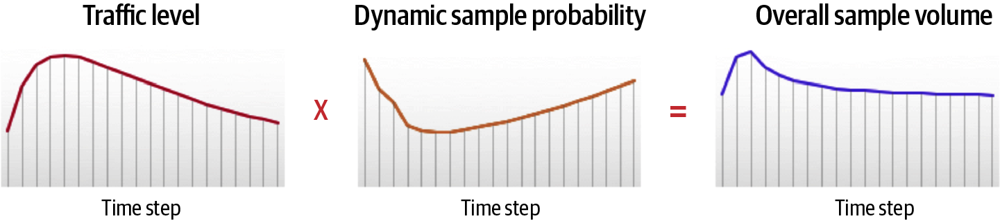

<title>第 15 章　便宜且足夠準確的取樣 — 《可觀測性工程》第二版</title>
<link rel="stylesheet" href="style.css">

<nav class="chapnav">
    <a href="ch14.html">← 上一章</a>
    <a href="index.html">目錄</a>
    <a href="ch16.html">下一章 →</a>
  </nav>
<main>
  <header class="masthead">
    <span class="eyebrow">Observability Engineering · Second Edition</span>
    
    <h1 class="title serif">第 15 章<br>便宜且足夠準確的取樣</h1>
    <div class="rule"></div>
  </header>

  <p>在前兩章中,我們探討了能夠有效儲存與擷取大量可觀測性資料的資料儲存設定與實作方式。本章我們將探討可以減少所需儲存之可觀測性資料量的技術。</p>
<p>在規模夠大的情況下,保留與處理每一個事件所需的資源可能變得過於龐大且不切實際。對事件進行取樣可以緩解資源消耗與資料精確度之間的取捨。本章將探討為何取樣有其用處(即使在較小的規模下亦然)、通常用來取樣資料的各種策略,以及這些策略之間的取捨。</p>
<p>在本章中，我們透過程式碼範例來說明這些策略如何實作，並逐步引入建立在先前範例基礎上的概念。我們會先從應用於單一事件的較簡單取樣方案開始，作為在取樣時使用資料統計表示法的概念性介紹。接著，我們會朝向套用在一系列相關事件（追蹤跨度）上的更複雜取樣策略邁進，並傳遞取樣後重建資料所需的資訊。</p>
<h2 class="section serif">取樣以精煉您的資料收集</h2>
<p>超過某個臨界點之後，蒐集、處理與儲存系統所產生每一筆日誌條目、每一個事件、每一段追蹤的成本，將遠遠超過其帶來的效益。當規模夠大時，要維運一套規模等同於生產環境基礎設施的可觀測性基礎設施，根本不可行。當可觀測性事件原本涓涓細流般的資料量，迅速化為資料洪流時，挑戰便轉為如何在「縮減保留的資料量」與</p>
<p>保留您的工程團隊在故障排除與理解系統正式環境行為時所需的關鍵資訊。</p>
<p>大多數應用程式的真實情況是，它們發出的許多事件幾乎都是相同且成功的。除錯的核心工作是搜尋浮現的模式，或是在故障期間檢視失敗的事件。從這個角度來看，將 100% 的事件全部傳輸到您的可觀測性資料後端就顯得浪費了。取而代之的做法是，可以選擇某些事件作為所發生情況的代表性範例，並將這些樣本連同您的可觀測性後端用來重建未被取樣的事件所需的元資料一併傳輸。</p>
<p>要有效地除錯，需要的是成功、或說「良好」事件的代表性樣本，用以與「不良」事件進行比較。使用具代表性的事件來重建您的可觀測性資料，能讓您降低傳輸每一個事件的開銷，同時仍能忠實地還原該資料的原始樣貌。取樣事件可以協助您以極低的資源成本達成可觀測性目標，這是一種在規模化情況下精煉可觀測性流程的方式。</p>
<p>從歷史上看，軟體業在面對回報大量系統狀態時的資源限制，浮現訊號、去除雜訊的標準做法，一直是產生包含有限數量標籤的聚合指標。如同第 5 章所述，無法被分解的系統狀態聚合視圖，對於大多數現代系統的故障排除需求而言過於粗略。在資料抵達除錯工具之前就先進行預先聚合，代表您無法深入探究超出聚合值粒度的細節。</p>
<p>在高度可觀測性之下，您可以運用本章所述的策略對事件進行取樣，同時仍能提供對系統狀態的細緻可見性。取樣讓您有能力決定哪些事件值得傳輸、哪些不需要。與將所有事件壓縮成特定期間內單一粗略系統狀態表示的預先聚合指標不同，取樣讓您能夠就哪些事件有助於浮現異常行為做出明智的決策，同時仍為資源限制進行優化。透過取樣事件與聚合指標進行優化的差異在於：取樣時，代表性事件所包含的每個維度上的完整脈絡都會被保留下來。</p>
<p>在規模化的情況下，精煉您的資料集以優化資源成本的需求變得至關重要。但即使在較小的規模下——縮減資源的需求較不迫切——精煉您所決定保留的資料，仍能帶來寶貴的成本節省與認知負荷降低。首先，讓我們從可用來決定哪些資料值得取樣的策略開始看起。接著，我們會探討在處理追蹤事件時，該項決策可以在何時、以何種方式做出。</p>
<h2 class="section serif">使用不同的取樣方法</h2>
<p>在解決資源限制問題時，取樣是一種常見的做法，做法是只收集可用遙測資料中的一小部分。可惜的是，「取樣」一詞被廣泛用作各種不同做法的統稱，實際上可能實作的取樣方式有很多種。取樣的概念與實作方式繁多，其中有些對除錯來說比其他方式更沒有效果。我們需要為每一種適合可觀測性的取樣技術命名，藉此釐清這個詞的含義，並區分彼此之間的差異與相似之處。</p>
<h2 class="section serif">固定機率取樣</h2>
<p>由於做法容易理解且易於實作，固定機率取樣是大多數人一想到取樣就會聯想到的方式：只保留固定百分比的資料，其餘則捨棄（例如每 10 個請求保留 1個）。</p>
<p>在對取樣後的資料進行分析時，你需要對資料進行轉換，以重建原始的請求分佈。假設你的服務同時以事件與指標進行檢測，並收到 100,000 個請求。如果每個收到的事件代表大約 1,000 個類似的事件，那麼你的遙測系統只回報收到100 個事件會產生誤導。其他遙測系統，例如指標，則會針對服務收到的100,000 個請求，每一個都遞增一次計數器。由於只有其中一部分請求會被取樣到，你的系統需要調整事件的彙總方式，以回傳大致正確的資料。對於固定取樣率的系統，你可以將每個事件乘以當時生效的取樣率，藉此估算出總請求數與其延遲總和。像 P99 與中位數這類純量分佈屬性，在固定機率取樣下不需要調整，因為它們不會因取樣過程而失真。</p>
<p>固定取樣的基本概念是：只要資料量夠大，任何出現過的錯誤都會再次發生。如果某個錯誤發生的頻率高到值得關注，你就會看到它。然而，如果你的資料量只是中等規模，固定取樣就無法維持統計上的可能性，讓你仍能看到你需要看到的內容。在以下情況下，固定取樣並不有效：</p>
<p>• 你非常在意錯誤情況，而不太在意成功情況。</p>
<p>• 有些客戶送出的流量比其他客戶多出好幾個數量級，而你希望所有客戶都能獲得良好的體驗。</p>
<p>• 你希望確保伺服器流量的暴增不會壓垮你的分析後端。</p>
<p>對於高可觀測性的系統而言，更精密的做法是確保捕捉並保留足夠的遙測資料，讓你在任何時間點都能看清任一服務的真實狀態。</p>
<h2 class="section serif">根據近期流量進行取樣</h2>
<p>與其使用固定機率，你可以動態調整系統對事件取樣的比率。如果近期收到的總流量較少，可以調高取樣機率；如果流量暴增可能壓垮可觀測性工具的後端，則可以調低取樣機率。然而，這種做法會帶來新的複雜度：一旦取樣率不再固定，在重建資料分布時就無法再用同一個固定係數去乘回每一筆事件。</p>
<p>因此，你的遙測系統需要使用一種加權演算法，考量事件收集當下實際生效的取樣機率。如果一筆事件代表 1,000 筆類似的事件，就不應該與另一筆只代表100 筆類似事件的事件直接做平均。所以，在計算計數時，系統必須把代表的事件數量加總起來，而不只是計算收集到的事件數量。而在彙總分布特性（例如中位數或 P99）時，系統必須先將每一筆事件展開為多筆，才能計算出事件總數以及百分位數所在的位置。</p>
<p>舉例來說，假設你有一組數值與取樣率配對：{1,5}、{3,2}、{7,9}。如果你在計算中位數時沒有考慮取樣率，天真地會得到結果 3——因為它位在 [1,3,7] 的中間。然而，你必須把取樣率納入考量。利用取樣率重建整組數值的方式，可以用展開後的完整清單來說明：[1,1,1,1,1,3,3,7,7,7,7,7,7,7,7,7]。從這個角度來看，考量取樣之後，數值的中位數其實是 7，這一點就變得很清楚。</p>
<h2 class="section serif">根據事件內容（鍵值）進行取樣</h2>
<p>動態取樣的另一種做法，是根據事件的內容（payload）來調整取樣率。從高層次來看，這代表在這組事件中選出一個或多個欄位，並在出現特定值組合時指定對應的取樣率。舉例來說，你可以根據 HTTP 回應碼來劃分事件，然後為每一種回應碼指定取樣率。這樣一來，你就能指定像下面這樣的取樣條件：</p>
<p>• 有錯誤的事件比成功的事件更重要。</p>
<p>• 新下單的事件比查詢訂單狀態的事件更重要。</p>
<p>• 影響付費用戶的事件比影響免費方案用戶的事件更值得保留。</p>
<p>透過這種方法,你可以將鍵設計得簡單(例如 HTTP 方法)或複雜(例如串接 HTTP方法、請求大小和 user‑agent),以便選出最能呈現服務流量狀況的樣本。</p>
<p>當鍵值空間較小(例如 HTTP 方法數量有限:GET、POST、HEAD 等),且給定鍵的相對比率維持穩定時(例如可以假設錯誤比成功更少見),僅根據事件內容以固定百分比取樣就能運作良好。值得注意的是,這個假設有時可能不成立,甚至在糟糕的情況下可能反過來。針對這些情況,你應該驗證自己的假設,並在假設條件反轉時,備妥處理事件流量激增的方案。</p>
<h2 class="section serif">結合每個鍵與歷史方法</h2>
<p>當流量內容較難預測時,你可以改為持續為每個傳入事件識別一個鍵(或多個鍵的組合),然後根據該鍵最近一段時間所見的流量大小,動態調整每個鍵的取樣率。舉例來說,可根據某個特定鍵組合(如 [customer_id, dataset_id,error_code])在過去 30 秒內出現的次數來決定取樣率。</p>
<p>如果某個特定組合在該期間內出現許多次,它的重要性就低於較不常出現的組合。這樣的設定可以讓比例上更少的事件被原封不動地傳遞出去,直到該流量比率改變,系統才會再次調整取樣率。</p>
<h2 class="section serif">選擇動態取樣選項</h2>
<p>要決定使用哪種取樣策略,檢視流經某服務的流量以及打到該服務的查詢種類會很有幫助。你面對的是首頁應用程式,90% 的請求彼此幾乎難以區分嗎?這種情況的需求,與處理資料庫前端代理伺服器的需求會有很大不同,因為後者有許多重複的查詢模式。</p>
<p>位於讀取快取(read‑through cache)後方的後端服務,由於每個請求大多是唯一的(快取已先把無聊的請求都篩除了),其需求又會與前端或代理伺服器不同。這些情況各自適合不同的取樣策略,以針對其需求進行優化。</p>
<h2 class="section serif">何時針對追蹤做出取樣決策</h2>
<p>到目前為止,前述每種策略考量的都是選擇樣本時該採用的準則。對於涉及單一服務(或單一工作單元)的事件而言,該決策僅取決於前述準則。而對於追蹤事件而言(或</p>
<p>跨多個工作單元的相互關聯事件），何時做出取樣決策也很重要。</p>
<p>追蹤跨度通常會跨多個服務收集——每個服務或收集點都可能採用自己獨特的取樣策略與速率。在這種分散式情境下，構成完整追蹤所需的每個跨度，恰好都是各服務選擇取樣的事件的機率相對較低。為確保能夠捕捉到一個有用追蹤中的每個跨度，必須依照取樣決策發生的時間點，特別留意處理方式。</p>
<p>如前所述，一種策略是利用事件本身的屬性——回傳狀態、延遲、端點，或像客戶 ID 這樣的高基數欄位——來決定是否值得取樣。事件內某些屬性，例如端點或客戶 ID，是靜態的，在事件一開始就已知。在基於頭部的取樣（head‑based sampling，或稱前置取樣）中，取樣決策是在追蹤事件初始化時就做出。該決策接著會向下游傳遞（例如透過插入「保證保留取樣」的標頭位元），以確保完成該追蹤所需的每個跨度都會被取樣。</p>
<p>某些欄位，例如回傳狀態或延遲，只有在事件執行完成後才能回溯得知。如果取樣決策依賴於這類動態欄位，那麼等到這些欄位的值確定時，每個底層服務早已各自獨立地決定是否要對其他跨度事件進行取樣。最好的情況下，你或許能保留下游被判定為有趣異常值的跨度，但其餘的上下文脈絡都會遺失。要針對只有在請求結束時才能得知的值正確做出決策，需要用到尾部取樣。</p>
<p>為了在尾部取樣方法中收集完整的追蹤，必須先將所有跨度收集到緩衝區中，然後才能回溯性地做出取樣決策。這種緩衝式取樣技術在計算上成本高昂，完全單靠受檢測程式碼本身在實務上並不可行。緩衝式取樣技術通常需要外部收集器端的邏輯來實現。</p>
<p>在決定取樣的內容與時機上，還存在其他細微的差異。不過到這個階段，最好透過程式碼範例來說明這些內容。</p>
<h2 class="section serif">將取樣策略轉譯為程式碼</h2>
<p>到目前為止，我們已經在概念層面上討論過取樣策略。接下來讓我們看看這些策略如何以程式碼實作。以下的教學範例使用 Go 來說明實作細節，但只要是支援雜湊／字典／映射（hashes/dicts/maps）、偽亂數產生，以及並行／計時器功能的語言，都能輕鬆移植這些範例。</p>
<h2 class="section serif">基本案例</h2>
<p>假設你想要檢測一個高流量的處理常式（handler），該處理常式會呼叫一個下游服務、執行一些內部工作，然後回傳結果並無條件地將一個事件記錄到你的檢測接收端：</p>
<pre class="code"><span class="tok-keyword">func</span> handler(resp http.ResponseWriter, req *http.Request) {
    start := time.Now()
    i, err := callAnotherService()
    resp.Write(i)
    RecordEvent(req, start, err)
}</pre>
<p>在大規模的情境下，這種檢測方式會顯得過於冗長，並導致資源消耗高得驚人。讓我們來看看對這個處理常式所要發送的事件進行取樣的其他方式。</p>
<h2 class="section serif">固定速率取樣</h2>
<p>一種樸素的做法可能是使用固定速率的機率取樣，隨機從 1,000 個事件中選擇1 個發送：</p>
<pre class="code"><span class="tok-keyword">var</span> sampleRate = flag.Int(<span class="tok-string">"sampleRate"</span>, <span class="tok-number">1000</span>, <span class="tok-string">"Static sample rate"</span>)
<span class="tok-keyword">func</span> handler(resp http.ResponseWriter, req *http.Request) {
    start := time.Now()
    i, err := callAnotherService()
    resp.Write(i)
    r := rand.Float64()
    <span class="tok-keyword">if</span> r &lt; <span class="tok-number">1.0</span> / *sampleRate {
          RecordEvent(req, start, err)
    }
}</pre>
<p>無論其相關性如何，每第 1,000 個事件都會被保留，作為其餘被捨棄的 999 個事件的代表。為了在後端重建你的資料，你需要記住每個事件代表sampleRate 個事件，並在檢測收集器的接收端相應地將所有計數器值乘回去。否則，你的工具將無法正確回報該時間段內實際遇到的事件總數。</p>
<h2 class="section serif">記錄取樣率</h2>
<p>在前面那個笨拙的範例中，你需要在接收端手動記住並設定取樣率。如果未來某個時間點你需要變更取樣率的值該怎麼辦？檢測收集器並不會確切知道該值是何時變更的。更好的做法是在發送已取樣的事件時明確傳遞當前的sampleRate（見圖 15‑1）——藉此表明</p>
<p>一個事件在統計上代表 sampleRate 個類似的事件。請注意，取樣率不僅在不同服務之間可能有所差異，即使在單一服務內也可能有所不同。</p>
<figure class="plate">
<figcaption>圖 15‑1. 不同的事件可能會以不同的取樣率被取樣。</figcaption></figure>
<p>在事件中記錄取樣率可以像這樣：</p>
<pre class="code"><span class="tok-keyword">var</span> sampleRate = flag.Int(<span class="tok-string">"sampleRate"</span>, <span class="tok-number">1000</span>, <span class="tok-string">"Service's sample rate"</span>)
<span class="tok-keyword">func</span> handler(resp http.ResponseWriter, req *http.Request) {
    start := time.Now()
    i, err := callAnotherService()
    resp.Write(i)
    r := rand.Float64()
    <span class="tok-keyword">if</span> r &lt; <span class="tok-number">1.0</span> / *sampleRate {
        RecordEvent(req, *sampleRate, start, err)
    }
}</pre>
<p>透過這種方式，你可以追蹤每個被取樣事件記錄當下所適用的取樣率。這樣一來，即使取樣率動態變化，你也擁有在重建資料時準確計算數值所需的資料。舉例來說，如果你想計算符合 "err != nil" 這類過濾條件的事件總數，你需要將符合 "err != nil" 的可見事件數量乘以各自的 sampleRate（見圖 15‑2）。而如果你想計算 durationMs 的總和，則需要在加總這些加權後的數值之前，先將每個被取樣事件的 durationMs 乘以其 sampleRate 進行加權。</p>
<p>這個範例過於簡化且較為刻意。當涉及處理追蹤事件時，你可能已經察覺到這種方法的缺陷。在下一節中，我們將探討讓動態取樣率與追蹤能夠良好搭配運作的其他考量因素。</p>
<figure class="plate">
<figcaption>圖 15‑2　可用加權數量來計算事件總數。</figcaption></figure>
<h2 class="section serif">一致性取樣</h2>
<p>到目前為止，在我們的程式碼中，我們已經看過取樣決策是如何做出的。但我們還沒有考慮在追蹤事件的取樣情境下，取樣決策是在何時做出的。使用基於前端（head‑based）、尾部（tail‑based）或緩衝（buffered）取樣的策略，在考量取樣如何與追蹤互動時就變得重要。我們會在本章末尾說明這些決策是如何實作的。現在，先來看看如何將情境傳播給下游的處理程式，以便（之後）做出那個決策。</p>
<p>為了妥善管理追蹤事件，應使用一個集中產生、並傳播給所有下游處理程式的取樣／追蹤 ID，而不是讓每個處理程式各自獨立產生取樣決策。這樣做能讓你針對同一個終端用戶請求的不同呈現方式，做出一致的取樣決策（見圖 15‑3）。換句話說，這確保了你能為任何一個被取樣的請求，捕捉到完整的端對端追蹤。如果你發現自己在下游很遠的地方取樣到一個錯誤，卻因為取樣策略的實作方式而遺失了上游的情境，那會是很遺憾的事。</p>
<figure class="plate">
<figcaption>圖 15‑3　包含 TraceID 的已取樣事件。</figcaption></figure>
<p>一致性取樣可確保在取樣率保持不變的情況下，追蹤要麼被完整保留，要麼被完整取樣捨棄。而且如果子跨度以更高的取樣率被取樣——例如，雜訊較多的Redis 呼叫以 1/1,000 的比例取樣，而其父跨度則以 1/10 的比例保留——就絕不會發生 Redis 子跨度被保留，而其父跨度卻被捨棄，導致追蹤斷裂的情況。</p>
<p>讓我們修改前一個程式碼範例，改為從 TraceID/Sampling‑ID（注意：W3C TraceContext 對此有更嚴謹的規範，但本章範例將使用 Sampling‑ID 與Upstream‑Sample‑Rate 標頭）讀取取樣機率值，而不是在每個步驟隨機產生一個值：</p>
<pre class="code"><span class="tok-keyword">var</span> sampleRate = flag.Int(<span class="tok-string">"sampleRate"</span>, <span class="tok-number">1000</span>, <span class="tok-string">"Service's sample rate"</span>)
<span class="tok-keyword">func</span> handler(resp http.ResponseWriter, req *http.Request) {
    <span class="tok-comment">// Use an upstream-generated random sampling ID if it exists.</span>
    <span class="tok-comment">// otherwise we're a root span. generate &amp; pass down a random ID.</span>
    <span class="tok-keyword">var</span> r float64
    <span class="tok-keyword">if</span> r, err := floatFromHexBytes(req.Header.Get(<span class="tok-string">"Sampling-ID"</span>)); err != nil {
          r = rand.Float64()
    }
    start := time.Now()
    <span class="tok-comment">// Propagate the Sampling-ID when creating a child span</span>
    i, err := callAnotherService(r)
    resp.Write(i)
    <span class="tok-keyword">if</span> r &lt; <span class="tok-number">1.0</span> / *sampleRate {
          RecordEvent(req, *sampleRate, start, err)
    }
}</pre>
<p>現在，透過變更 sampleRate feature flag 來調整被取樣追蹤的比例，你就能在不重新編譯的情況下調整取樣率，甚至可以在執行期間進行調整。不過，如果你採用我們接下來要討論的技術——目標速率取樣（target‑rate sampling）——就不需要手動調整取樣率了。</p>
<h2 class="section serif">目標速率取樣</h2>
<p>隨著流量的增減，你不需要手動調整每個服務的取樣率旗標。你可以透過追蹤你所接收到的傳入請求速率，將這個過程自動化（見圖 15‑4）。</p>
<figure class="plate">
<figcaption>圖 15‑4　你可以自動化整體取樣量的計算。</figcaption></figure>
<p>讓我們來看看這在程式碼範例中是如何完成的：</p>
<pre class="code"><span class="tok-keyword">var</span> targetEventsPerSec = flag.Int(<span class="tok-string">"targetEventsPerSec"</span>, <span class="tok-number">5</span>,
    <span class="tok-string">"The target number of requests per second to sample from this service."</span>)
<span class="tok-comment">// Note: sampleRate can be a float! It doesn't have to be an integer.</span>
<span class="tok-keyword">var</span> sampleRate float64 = <span class="tok-number">1.0</span>
<span class="tok-comment">// Track requests from previous minute to decide sampling rate for the next</span>
<span class="tok-comment">// minute.</span>
<span class="tok-keyword">var</span> requestsInPastMinute *int
<span class="tok-keyword">func</span> main() {
    <span class="tok-comment">// Initialize counters.</span>
    rc := <span class="tok-number">0</span>
    requestsInPastMinute = &amp;rc
    <span class="tok-keyword">go</span> <span class="tok-keyword">func</span>() {
        <span class="tok-keyword">for</span> {
              time.Sleep(time.Minute)
              newSampleRate = *requestsInPastMinute / (<span class="tok-number">60</span> * *targetEventsPerSec)
              <span class="tok-keyword">if</span> newSampleRate &lt; <span class="tok-number">1</span> {
                   sampleRate = <span class="tok-number">1.0</span>
              } <span class="tok-keyword">else</span> {
                   sampleRate = newSampleRate
              }
              newRequestCounter := <span class="tok-number">0</span>
              <span class="tok-comment">// Real production code would do something less prone to race</span>
              <span class="tok-comment">// conditions e.g. atomics</span>
              requestsInPastMinute = &amp;newRequestCounter
        }
    }()
    http.Handle(<span class="tok-string">"/"</span>, handler)
     [...]
}
<span class="tok-keyword">func</span> handler(resp http.ResponseWriter, req *http.Request) {
    <span class="tok-keyword">var</span> r float64
    <span class="tok-keyword">if</span> r, err := floatFromHexBytes(req.Header.Get(<span class="tok-string">"Sampling-ID"</span>)); err != nil {
        r = rand.Float64()
    }
    start := time.Now()
    *requestsInPastMinute++
    i, err := callAnotherService(r)
    resp.Write(i)
    <span class="tok-keyword">if</span> r &lt; <span class="tok-number">1.0</span> / sampleRate {
        RecordEvent(req, sampleRate, start, err)
    }
}</pre>
<p>此範例在資源成本方面提供了可預測的體驗。然而，這項技術仍缺乏彈性，無法根據每個鍵的量來以不同速率取樣。</p>
<h2 class="section serif">採用多個靜態取樣率</h2>
<p>如果取樣率設定得很高，無論是動態還是靜態設定，你都需要考慮到自己可能會錯過長尾事件——例如錯誤或高延遲事件——因為第 99.9 百分位的離群事件被隨機取樣選中的機率相當低。同樣地，你可能會希望為每個不同的來源保留至少一些資料，而不是讓高流量的來源淹沒低流量的來源。</p>
<p>此情境的補救方法是設定多個取樣率。讓我們先依據鍵值來改變取樣率。以下範例程式碼將任何基準線（非離群值）事件以 1/1,000 的比率取樣，並選擇以1/1 及 1/5 的比率分別對任何錯誤或緩慢查詢進行尾部取樣：</p>
<pre class="code"><span class="tok-keyword">var</span> sampleRate = flag.Int(<span class="tok-string">"sampleRate"</span>, <span class="tok-number">1000</span>, <span class="tok-string">"Service's sample rate"</span>)
<span class="tok-keyword">var</span> outlierSampleRate = flag.Int(<span class="tok-string">"outlierSampleRate"</span>, <span class="tok-number">5</span>, <span class="tok-string">"Outlier sample rate"</span>)
<span class="tok-keyword">func</span> handler(resp http.ResponseWriter, req *http.Request) {
    start := time.Now()
    i, err := callAnotherService(r)
    resp.Write(i)
    r := rand.Float64()
    <span class="tok-keyword">if</span> err != nil || time.Since(start) &gt; <span class="tok-number">500</span>*time.Millisecond {
        <span class="tok-keyword">if</span> r &lt; <span class="tok-number">1.0</span> / *outlierSampleRate {
              RecordEvent(req, *outlierSampleRate, start, err)
        }
    } <span class="tok-keyword">else</span> {
        <span class="tok-keyword">if</span> r &lt; <span class="tok-number">1.0</span> / *sampleRate {
              RecordEvent(req, *sampleRate, start, err)
        }
    }
}</pre>
<p>雖然這是使用多個靜態取樣率的良好範例，但此做法仍容易受到遙測流量突增的影響。如果應用程式經歷突增</p>
<p>在錯誤率方面，每一個錯誤都會被取樣。接下來，我們將以目標速率取樣（target‑rate sampling）來解決這個缺點。</p>
<h2 class="section serif">依鍵值與目標速率取樣</h2>
<p>將前面兩種技術結合起來，我們可以在此基礎上進一步延伸，鎖定特定的遙測比率。如果某個請求是異常的（例如延遲超過 500 毫秒或發生錯誤），就可以將其指定以自身保證的比率進行尾部取樣，同時對其他請求進行限速，使其符合每秒取樣請求數的預算：</p>
<pre class="code"><span class="tok-keyword">var</span> targetEventsPerSec = flag.Int(<span class="tok-string">"targetEventsPerSec"</span>, <span class="tok-number">4</span>,
    <span class="tok-string">"The target number of ordinary requests/sec to sample from this service."</span>)
<span class="tok-keyword">var</span> outlierEventsPerSec = flag.Int(<span class="tok-string">"outlierEventsPerSec"</span>, <span class="tok-number">1</span>,
    <span class="tok-string">"The target number of outlier requests/sec to sample from this service."</span>)
<span class="tok-keyword">var</span> sampleRate float64 = <span class="tok-number">1.0</span>
<span class="tok-keyword">var</span> requestsInPastMinute *int
<span class="tok-keyword">var</span> outlierSampleRate float64 = <span class="tok-number">1.0</span>
<span class="tok-keyword">var</span> outliersInPastMinute *int
<span class="tok-keyword">func</span> main() {
    <span class="tok-comment">// Initialize counters.</span>
    rc := <span class="tok-number">0</span>
    requestsInPastMinute = &amp;rc
    oc := <span class="tok-number">0</span>
    outliersInPastMinute = &amp;oc
    <span class="tok-keyword">go</span> <span class="tok-keyword">func</span>() {
         <span class="tok-keyword">for</span> {
              time.Sleep(time.Minute)
              newSampleRate = *requestsInPastMinute / (<span class="tok-number">60</span> * *targetEventsPerSec)
              <span class="tok-keyword">if</span> newSampleRate &lt; <span class="tok-number">1</span> {
                   sampleRate = <span class="tok-number">1.0</span>
              } <span class="tok-keyword">else</span> {
                   sampleRate = newSampleRate
              }
              newRequestCounter := <span class="tok-number">0</span>
              requestsInPastMinute = &amp;newRequestCounter
              newOutlierRate = outliersInPastMinute / (<span class="tok-number">60</span> * *outlierEventsPerSec)
              <span class="tok-keyword">if</span> newOutlierRate &lt; <span class="tok-number">1</span> {
                   outlierSampleRate = <span class="tok-number">1.0</span>
              } <span class="tok-keyword">else</span> {
                   outlierSampleRate = newOutlierRate
              }
              newOutlierCounter := <span class="tok-number">0</span>
              outliersInPastMinute = &amp;newOutlierCounter
         }
    }()
    http.Handle(<span class="tok-string">"/"</span>, handler)
     [...]
}
<span class="tok-keyword">func</span> handler(resp http.ResponseWriter, req *http.Request) {
    <span class="tok-keyword">var</span> r float64
    <span class="tok-keyword">if</span> r, err := floatFromHexBytes(req.Header.Get(<span class="tok-string">"Sampling-ID"</span>)); err != nil {
        r = rand.Float64()
    }
    start := time.Now()
    i, err := callAnotherService(r)
    resp.Write(i)
    <span class="tok-keyword">if</span> err != nil || time.Since(start) &gt; <span class="tok-number">500</span>*time.Millisecond {
         *outliersInPastMinute++
         <span class="tok-keyword">if</span> r &lt; <span class="tok-number">1.0</span> / outlierSampleRate {
               RecordEvent(req, outlierSampleRate, start, err)
         }
    } <span class="tok-keyword">else</span> {
         *requestsInPastMinute++
         <span class="tok-keyword">if</span> r &lt; <span class="tok-number">1.0</span> / sampleRate {
               RecordEvent(req, sampleRate, start, err)
         }
    }
}</pre>
<p>這個非常詳盡的範例使用了大量重複的程式碼區塊，之所以以這種方式呈現是為了清楚起見。如果這個範例要支援第三種類型的請求，那麼重構程式碼以支援跨任意數量的鍵設定取樣率，會更為合理。</p>
<h2 class="section serif">在任意多個鍵上以動態速率取樣</h2>
<p>實務上，你很可能無法預先預測出想要設定的請求配額的有限集合。在前面的範例中，我們的程式碼有許多重複的區塊，而且是針對每種情況（錯誤／延遲相對於正常）手動指定目標速率。</p>
<p>更實際的做法是重構程式碼，改用一個 map 來記錄每個鍵的目標速率及已見過的事件數量。程式碼接著會查詢每個鍵以做出取樣決策。這樣做會將我們的範例程式碼修改成如下：</p>
<pre class="code"><span class="tok-keyword">var</span> counts map[SampleKey]int
<span class="tok-keyword">var</span> sampleRates map[SampleKey]float64
<span class="tok-keyword">var</span> targetRates map[SampleKey]int
<span class="tok-keyword">func</span> neverSample(k SampleKey) bool {
    <span class="tok-comment">// Left to your imagination. Could be a situation where we know the request</span>
    <span class="tok-comment">// is a keep-alive or health check we never want to record, etc.</span>
    <span class="tok-keyword">return</span> <span class="tok-keyword">false</span>
}
<span class="tok-comment">// Boilerplate main() and goroutine init to overwrite maps and roll them over</span>
<span class="tok-comment">// every interval goes here.</span>
<span class="tok-keyword">type</span> SampleKey <span class="tok-keyword">struct</span> {
    ErrMsg        string
    BackendShard  int
    LatencyBucket int
}
<span class="tok-comment">// This might compute for each k: newRate[k] = counts[k] / (interval *</span>
<span class="tok-comment">// targetRates[k]), for instance.</span>
<span class="tok-keyword">func</span> checkSampleRate(resp http.ResponseWriter, start time.Time, err error,
         sampleRates map[any]float64, counts map[any]int) float64 {
    msg := <span class="tok-string">""</span>
    <span class="tok-keyword">if</span> err != nil {
         msg = err.Error()
    }
    roundedLatency := <span class="tok-number">100</span> *(time.Since(start) / (<span class="tok-number">100</span>*time.Millisecond))
    k := SampleKey {
         ErrMsg:       msg,
         BackendShard: resp.Header().Get(<span class="tok-string">"Backend-Shard"</span>),
         LatencyBucket: roundedLatency,
    }
    <span class="tok-keyword">if</span> neverSample(k) {
         <span class="tok-keyword">return</span> -<span class="tok-number">1.0</span>
    }
    counts[k]++
    <span class="tok-keyword">if</span> r, ok := sampleRates[k]; ok {
         <span class="tok-keyword">return</span> r
    } <span class="tok-keyword">else</span> {
         <span class="tok-keyword">return</span> <span class="tok-number">1.0</span>
    }
}
<span class="tok-keyword">func</span> handler(resp http.ResponseWriter, req *http.Request) {
    <span class="tok-keyword">var</span> r float64
    <span class="tok-keyword">if</span> r, err := floatFromHexBytes(req.Header.Get(<span class="tok-string">"Sampling-ID"</span>)); err != nil {
         r = rand.Float64()
    }
    start := time.Now()
    i, err := callAnotherService(r)
    resp.Write(i)
    sampleRate := checkSampleRate(resp, start, err, sampleRates, counts)
    <span class="tok-keyword">if</span> sampleRate &gt; <span class="tok-number">0</span> &amp;&amp; r &lt; <span class="tok-number">1.0</span> / sampleRate {
         RecordEvent(req, sampleRate, start, err)
    }
}</pre>
<p>此時，我們的程式碼範例已經變得相當龐大，但仍缺少更精密的技術。我們的範例目前是用來說明取樣概念的實作方式。</p>
<p>幸運的是，現有的程式庫可以處理這類複雜的取樣邏輯。以 Go 而言，dynsampler‑go 這個程式庫會針對任意數量的取樣鍵維護一份對照表，只要某個鍵是新出現的，就會為其分配公平的取樣份額。該程式庫還包含更進階的取樣率計算技術，可以基於目標取樣率，也可以完全不設定明確的目標取樣率。</p>
<p>在本章中，我們即將完成關於取樣概念應用的完整入門導覽。在做結論之前，讓我們做最後一項改進：把目前為止完成的尾部取樣，與能夠要求下游所有服務都取樣追蹤的頭部取樣結合起來。</p>
<h2 class="section serif">整合應用：以鍵為單位的頭部與尾部目標率取樣</h2>
<p>本章稍早提到，頭部取樣需要設定一個標頭，將取樣決策向下游傳遞。對於我們一直在逐步完善的程式碼範例來說，這代表父跨度必須把頭部取樣決策及其對應的取樣率，一併傳遞給所有子跨度。這樣做會強制所有子跨度都進行取樣，即使該層級的動態取樣率原本並不會選擇對該請求取樣：</p>
<pre class="code"><span class="tok-keyword">var</span> headCounts, tailCounts map[<span class="tok-keyword">interface</span>{}]int
<span class="tok-keyword">var</span> headSampleRates, tailSampleRates map[<span class="tok-keyword">interface</span>{}]float64
<span class="tok-comment">// Boilerplate main() and goroutine init to overwrite maps and roll them over</span>
<span class="tok-comment">// every interval goes here. checkSampleRate() etc. from above as well</span>
<span class="tok-keyword">func</span> handler(resp http.ResponseWriter, req *http.Request) {
    <span class="tok-keyword">var</span> r, upstreamSampleRate, headSampleRate float64
    <span class="tok-keyword">if</span> r, err := floatFromHexBytes(req.Header.Get(<span class="tok-string">"Sampling-ID"</span>)); err != nil {
         r = rand.Float64()
    }
    <span class="tok-comment">// Check if we have a non-negative upstream sample rate; if so, use it.</span>
    <span class="tok-keyword">if</span> upstreamSampleRate, err := floatFromHexBytes(
         req.Header.Get(<span class="tok-string">"Upstream-Sample-Rate"</span>)
    ); err == nil &amp;&amp; upstreamSampleRate &gt; <span class="tok-number">1.0</span> {
         headSampleRate = upstreamSampleRate
    } <span class="tok-keyword">else</span> {
         headSampleRate := checkHeadSampleRate(req, headSampleRates, headCounts)
         <span class="tok-keyword">if</span> headSampleRate &gt; <span class="tok-number">0</span> &amp;&amp; r &lt; <span class="tok-number">1.0</span> / headSampleRate {
              <span class="tok-comment">// We'll sample this when recording event below; propagate the</span>
              <span class="tok-comment">// decision downstream though.</span>
         } <span class="tok-keyword">else</span> {
              <span class="tok-comment">// Clear out headSampleRate as this event didn't qualify for</span>
              <span class="tok-comment">// sampling. This is a sentinel value.</span>
              headSampleRate = -<span class="tok-number">1.0</span>
         }
    }
    start := time.Now()
    i, err := callAnotherService(r, headSampleRate)
    resp.Write(i)
    <span class="tok-keyword">if</span> headSampleRate &gt; <span class="tok-number">0</span> {
         RecordEvent(req, headSampleRate, start, err)
    } <span class="tok-keyword">else</span> {
         <span class="tok-comment">// Same as for head sampling, except here we make a tail sampling</span>
         <span class="tok-comment">// decision we can't propagate downstream.</span>
         tailSampleRate := checkTailSampleRate(
              resp, start, err, tailSampleRates, tailCounts,
         )
         <span class="tok-keyword">if</span> tailSampleRate &gt; <span class="tok-number">0</span> &amp;&amp; r &lt; <span class="tok-number">1.0</span> / tailSampleRate {
              RecordEvent(req, tailSampleRate, start, err)
         }
    }
}</pre>
<p>到了這個階段，我們的程式碼範例已經相當複雜了。不過，即使在這個層級，它仍然充分展現了取樣所能提供的彈性有多麼強大，能夠捕捉除錯程式碼時所需的所有必要脈絡。在高吞吐量的現代分散式系統中，可能需要更進一步細化，並採用更精密的取樣技術。</p>
<p>舉例來說，每當下游的尾部取樣啟發式方法在回應中捕捉到錯誤時，你可能會想要調高頭部取樣的 sampleRate 以提高機率。在這個例子中，收集器端的緩衝取樣是一種機制，它能讓取樣決策延後到整個追蹤都被緩衝之後才做出——結合了頭部取樣的優點，以及只有在尾部才能得知的特性。</p>
<h2 class="section serif">結論</h2>
<p>取樣是精煉可觀測性資料的一項實用技術。雖然在大規模運行時取樣有其必要性，但即使在較小的規模下，它在各種情況中也十分有用。取樣最大的用處在於能在維持資料真實度的同時，優化資源消耗。</p>
<p>這些以程式碼為基礎的範例說明了各種取樣策略是如何實作的。開源檢測函式庫——例如 OTel——為你實作這類取樣邏輯的情況正變得越來越普遍。隨著這些函式庫逐漸成為產生應用程式遙測資料的標準，你需要在自己的程式碼中重新實作這些取樣策略的可能性應該會愈來愈低。</p>
<p>然而，即使你依賴第三方程式庫來為你管理該策略，理解其背後取樣實作的機制仍是至關重要的，如此才能判斷哪種方法適合你的特定情境。理解這些策略（靜態與動態、頭部與尾部，或兩者的組合）在實務上如何運作，能讓你明智地運用它們，在達成資料保真度的同時，也針對資源限制進行優化。</p>
<p>與決定要檢測程式碼的內容及方式類似，決定要取樣什麼、何時取樣以及如何取樣，最好由你獨特的組織需求來定義。事件中會影響其取樣價值高低的欄位，主要取決於這些欄位對於理解你環境狀態的用處，以及它們對達成業務目標的影響。取樣可降低你的應用程式傳送至可觀測性後端的遙測資料整體量。</p>
<p>在下一章中，我們將探討一種路由大量遙測資料的方法：使用流水線進行遙測管理。</p>

  <footer class="colophon">
    <span>《可觀測性工程》第二版 · 第 15 章</span>
    <span>便宜且足夠準確的取樣</span>
  </footer>
</main>
